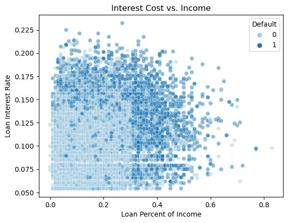

import pandas as pd
import warnings
warnings.simplefilter("ignore")
url = "https://raw.githubusercontent.com/PhilChodrow/ml-notes/main/data/credit-risk/train.csv"
df_train = pd.read_csv(url)
Overview
This study attempts to optimize the maximum total expected profit from loans for an unknown bank. I will be trying to create an automated decision-making sytem that gives each prospective borrower a score and decides whether to give them a loan based on a threshold, \(t\), where each score, \(s_i\), of borrower, \(i\), is defined as \[s_i = \langle \mathbf{X}_i, \mathbf{w} \rangle \tag{1}\] where \(\mathbf{X}_i\) is the vector of features for borrower, \(i\), and \(\mathbf{w}\) is the vector of weights for each feature. Using this, the goal is to find \(\mathbf{w}\) and \(t\) which maximize the total expected profit per loan for the bank.
To accomplish this, I use logistic regression to determine \(\mathbf{w}\) and calculate the expected profit per loan for various \(t\)-values. In this study, we assume that each loan is a 10-year loan and 75% of the interest is used to pay for operating costs such as employee salaries. We also assume that defaults occur after three years and the bank loses 70% of the principal. That is, \[\begin{align*} \textbf{profit} &= \text{loan amount}\cdot(1+0.25\cdot\text{interest rate})^{10} - \text{loan amount} \\ \textbf{cost} &= \text{loan amount}\cdot(1+0.25\cdot\text{interest rate})^3 - 1.7\cdot\text{loan amount} \end{align*} \tag{2}\]
In the end, the expected profit per loan for the bank was $1714.51.
Afterwards, I discuss the impact that the automated system has on different segments of the population of prospective borrowers. I explore how the system impacts different age groups, purposes for the loan request, and income levels. I find that it is easier for younger age groups to receive loans, harder to take out student loans and loans for ventures, and it is much easier for higher income-levels to receive loans under my system.
Preparing the Training Data
The dataset contains the following columns:
person_age: the age of the prospective borrower.person_income: the income of the prospective borrower at the time of application.person_home_ownership: the home ownership status of the prospective borrower at the time of application. Possible values areMORTGAGE,OWN,RENT, andOTHER.person_emp_length: the length of the most recent employment for the prospective borrower, in years.loan_intent: the purpose of the loan request.loan_grade: a composite measure of the likelihood of the borrower to repay the loan. My system will give its own score to each borrower.loan_amnt: the amount of the loan.loan_int_rate, the annual interest rate on the loan in percent. This is the target variable.loan_status: whether (1) or not (0) the borrower defaulted on the loan.loan_percent_income: the amount of the loan as a proportion of the prospective borrower’s personal income. This is caluculated asloan_amnt/person_income.cb_person_default_on_file: whether the prospective borrower has previously defaulted on a loan in the records of a credit bureau.cb_person_cred_hist_length: the length of credit history of the prospective borrower, in years.
In addition to the columns given by the data set, I will add another column:
int_percent_income: the amount of yearly interest as a proportion of the borrower’s income. Calculated asint_percent_income = loan_percent_income * loan_int_rate.
I will also be changing loan_int_rate from a percentage to a fraction before calculating int_percent_income.
def prepare_data(df):
df_ = df.copy()
df_ = df_.dropna()
df_['loan_int_rate'] = df_['loan_int_rate'] / 100
df_['int_percent_income'] = df_['loan_percent_income'] * df_['loan_int_rate']
df_ = df_[(df_['person_age'] <= 100) & (df_['person_emp_length'] <= 100)]
return df_
df_train = prepare_data(df_train)
df_train.head()- 1
- Function to prepare data.
- 2
- Copy dataframe
- 3
- Drop all NaNs
- 4
-
Converts
loan_int_rateto fraction from percent. - 5
-
Calculates
int_percent_incomeand add it as a new column. - 6
- Drops all people over the age of 100 and have employment lengths over 100 years.
| person_age | person_income | person_home_ownership | person_emp_length | loan_intent | loan_grade | loan_amnt | loan_int_rate | loan_status | loan_percent_income | cb_person_default_on_file | cb_person_cred_hist_length | int_percent_income | age_group | |
|---|---|---|---|---|---|---|---|---|---|---|---|---|---|---|
| 1 | 27 | 98000 | RENT | 3.0 | EDUCATION | C | 11750 | 1.347000e-19 | 0 | 0.12 | Y | 6 | 1.616400e-20 | 20-29 |
| 2 | 22 | 36996 | RENT | 5.0 | EDUCATION | A | 10000 | 7.510000e-20 | 0 | 0.27 | N | 4 | 2.027700e-20 | 20-29 |
| 3 | 24 | 26000 | RENT | 2.0 | MEDICAL | C | 1325 | 1.287000e-19 | 1 | 0.05 | N | 4 | 6.435000e-21 | 20-29 |
| 4 | 29 | 53004 | MORTGAGE | 2.0 | HOMEIMPROVEMENT | A | 15000 | 9.630000e-20 | 0 | 0.28 | N | 10 | 2.696400e-20 | 20-29 |
| 6 | 21 | 21700 | RENT | 2.0 | HOMEIMPROVEMENT | D | 5500 | 1.491000e-19 | 1 | 0.25 | N | 2 | 3.727500e-20 | 20-29 |
Exploring the Data
Let’s first take a look at how the loan interest rate and the yearly interest amount as a proportion of income (loan percent of income) relates to whether or not a borrower will default. The reason this may be a good place to start is because it is intuitive to think that a higher interest rate could result in more defaults. Additionally, it is also intuitive to think that the larger the loan amount is compared to a person’s income, the chance of defaulting increases. So, we can put these ideas together and conclude that interest rates and the loan percent of income of income could be closely related to the chance of defaulting.
Code
import seaborn as sns
import matplotlib.pyplot as plt
pltt = 'Paired'
int_income_plt = sns.scatterplot(df_train,
x = 'loan_percent_income',
y = 'loan_int_rate',
hue = 'loan_status',
palette = pltt)
int_income_plt.set(xlabel = 'Loan Percent of Income',
ylabel = 'Loan Interest Rate',
title = 'Interest Cost vs. Income')
int_income_plt.legend(title = 'Default');

As we can see, most defaults occur along the outer ring (dark blue dots). This confirms our intuition. As interest rate increases, more defaults occur and the same can be seen with the loan percent of income. Additionally, this figure (Figure 1) provides a good visualization of the interest percent of income (int_percent_income). With that said, loan_int_rate, loan_percent_income, and int_percent_income seem like good features to use.
Next, let’s try to find some features that agree with this pattern. First, let’s take a look at loan_intent.
Code
df_train.groupby(["loan_intent"]).agg({'loan_status':'mean',
'loan_int_rate': 'mean',
'loan_percent_income':'mean',
'int_percent_income':'mean'})- 1
-
Get mean of
loan_status,loan_int_rate,loan_percent_income, andint_percent_incomegrouped byloan_intent.
| loan_status | loan_int_rate | loan_percent_income | int_percent_income | |
|---|---|---|---|---|
| loan_intent | ||||
| DEBTCONSOLIDATION | 0.282983 | 0.110173 | 0.170322 | 0.019230 |
| EDUCATION | 0.171012 | 0.109952 | 0.168219 | 0.018827 |
| HOMEIMPROVEMENT | 0.258327 | 0.111819 | 0.164516 | 0.018924 |
| MEDICAL | 0.264455 | 0.110711 | 0.172422 | 0.019511 |
| PERSONAL | 0.191385 | 0.110282 | 0.167568 | 0.018898 |
| VENTURE | 0.146221 | 0.109690 | 0.169147 | 0.018907 |
From the table, we can see that the loan interest rate, loan percent income, and interest percent income are fairly similar between all categories of loan intent. However, there is a remarkable difference in default rates. DEBTCONSOLODATION, HOMEIMPROVEMENT, and MEDICAL all have much higher default rates than the other three categories. This doesn’t align well with our findings from Figure 1 since the default rates don’t align with loan_int_rate, loan_percent_income, and int_percent_income. As such, loan_intent may not be a good predictor.
Next, we will look at person_home_ownership.
Code
df_train.groupby(["person_home_ownership"]).agg({'loan_status':'mean',
'loan_int_rate': 'mean',
'loan_percent_income':'mean',
'int_percent_income':'mean'})- 1
-
Get mean of
loan_status,loan_int_rate,loan_percent_income, andint_percent_incomegrouped byperson_home_ownership.
| loan_status | loan_int_rate | loan_percent_income | int_percent_income | |
|---|---|---|---|---|
| person_home_ownership | ||||
| MORTGAGE | 0.124496 | 0.105270 | 0.151172 | 0.016350 |
| OTHER | 0.272727 | 0.120592 | 0.189870 | 0.024013 |
| OWN | 0.071429 | 0.109466 | 0.184076 | 0.020363 |
| RENT | 0.309761 | 0.114524 | 0.180943 | 0.021013 |
Unlike loan_intent (Table 1), person_home_ownership matches our findings from Figure 1. The default rates mostly lineup with loan_int_rate, loan_percent_income, and int_percent_income except for people who OWN a home, who have a relatively high loan_percent_income and int_percent_income, but have the lowest default rates. It is important to note however, that people who OWN a home have the second lowest loan_int_rate.
Additionally, as we can see below (Figure 2), RENT and OTHER have a relatively high amount of borrowers who are using the loans for DEBTCONSOLIDATION and MEDICAL. This matches up with the findings from Table 1. It seems that person_home_ownership is also a decent proxy for loan_intent while also matching the findings of Figure 1.
As such, we can expect person_home_ownership to possibly be a good predictor.
Code
home_intent = ((df_train.groupby(['person_home_ownership', 'loan_intent']).size()
/ df_train.groupby(['person_home_ownership']).size())
.rename('proportion')
.reset_index())
home_intent_plt = sns.barplot(home_intent,
x = 'person_home_ownership',
y = 'proportion',
hue = "loan_intent",
palette = pltt)
home_intent_plt.set(xlabel = "Home Ownership Status",
ylabel = "Proportion",
title = "Loan Intent by Home Ownership Status")
home_intent_plt.legend(title = "Loan Intent",
fontsize = '8');- 1
-
Proportion of each
loan_intentcategory for eachperson_home_ownershipcategory. - 2
-
Renames (1) to
proportion. - 3
- Resets index.
- 4
- Plots loan intent by home ownership status.
Lastly, let’s look at how age relates to loan_int_rate, loan_percent_income, int_percent_income, and default rates. To do this, I created age ranges of 10 years (20’s, 30’s, 40’s, etc.).
Code
import numpy as np
age_labels = ["20-29", "30-39", "40-49", "50-59", "60-69", "70-79", "80+"]
age_bins = np.concatenate((np.arange(19, 80, 10), [150]))
def get_age_groups(df):
df["age_group"] = pd.cut(x = df['person_age'], bins = age_bins, labels = age_labels)
return df
df_train = get_age_groups(df_train)
df_train.groupby(["age_group"]).agg({'loan_status':'mean',
'loan_int_rate': 'mean',
'loan_percent_income':'mean',
'int_percent_income':'mean'})- 1
- List of age group labels.
- 2
- Set’s bins to [19, 29, 39, …, 79, 150].
- 3
-
Function that creates a new column called
age_groupand groups ages into 10 year intervals. - 4
-
Adds
age_grouptodf_train. - 5
-
Get mean of
loan_status,loan_int_rate,loan_percent_income, andint_percent_incomegrouped byage_group.
| loan_status | loan_int_rate | loan_percent_income | int_percent_income | |
|---|---|---|---|---|
| age_group | ||||
| 20-29 | 0.220637 | 0.110169 | 0.171090 | 0.019270 |
| 30-39 | 0.200233 | 0.110843 | 0.164211 | 0.018574 |
| 40-49 | 0.193648 | 0.110663 | 0.160727 | 0.018248 |
| 50-59 | 0.221622 | 0.111235 | 0.149243 | 0.016920 |
| 60-69 | 0.318182 | 0.109743 | 0.202955 | 0.022861 |
| 70-79 | 0.142857 | 0.107500 | 0.115714 | 0.011406 |
| 80+ | 0.000000 | 0.096100 | 0.110000 | 0.010571 |
Code
age_intent = ((df_train.groupby(['age_group', 'loan_intent']).size()
/ df_train.groupby(['age_group']).size())
.rename('proportion')
.reset_index())
fig, ax = plt.subplots(1, 2, figsize = (15, 6))
age_intent_plt = sns.barplot(age_intent,
x = 'age_group',
y = 'proportion',
hue = 'loan_intent',
palette = pltt,
ax = ax[0])
age_intent_plt.set(xlabel = "Age Group",
ylabel = "Proportion",
title = "Loan Intent by Age Group")
age_intent_plt.legend(title = "Loan Intent")
age_home = ((df_train.groupby(['age_group', 'person_home_ownership']).size()
/ df_train.groupby(['age_group']).size())
.rename('proportion')
.reset_index())
age_home_plt = sns.barplot(age_home,
x = 'age_group',
y = 'proportion',
hue = 'person_home_ownership',
palette = pltt,
ax = ax[1])
age_home_plt.set(xlabel = "Age Group",
ylabel = "Proportion",
title = "Home Ownership Status by Age Group")
age_home_plt.legend(title = "Home Ownership Status");- 1
-
Proportion of each
loan_intentcategory for eachage_groupcategory. - 2
-
Renames (1) to
proportion. - 3
- Resets index.
- 4
- Create 2 subplots.
- 5
- Plots loan intent by age group as first subplot.
- 6
-
Proportion of each
person_home_ownershipcategory for eachage_groupcategory. - 7
-
Renames (6) to
proportion. - 8
- Resets index.
- 9
- Plots home ownership status by age group as second subplot.
From Table 3, we can see that age_group follows the trend found in Figure 1 with the exception for 50-59 year olds who have a higher default rate despite having a relatively low loan_percent_income and int_percent_income. However, they do have the highest loan_int_rate out of all the age groups which may be a reason as to why their default rates are so high.
Then, comparing age_group with loan_intent (Figure 3), we can see that as borrowers get older, they spend more on MEDICAL. Yet despite spending the most on MEDICAL, 70-79 year olds have the lower default rates by far which contradicts our findings from Table 1. Additionally, there is no clear relationship between age_group and person_home_ownership.
Therefore, we can most likely conclude that age_group is not a good predictor.
Finding a Threshold
Using our findings, I will attempt to find an optimal threshold which will maximize expected profit from loans for the bank. I will do this by finding the best features through a semi-exhaustive search, then using those features, for logistic regression. I will then use the coefficients from the trained model as my weight vector, w, to compute the score, s, for each borrower (Equation 1).
Lastly, I will test multiple thresholds to find the optimal threshold that maximizes expected profit per loan for the bank. The base profit to beat,assuming that the bank gives everyone loans, is $819.12.
gain = ((df_train[df_train['loan_status'] == 0]['loan_amnt']
*(1 + 0.25*df_train['loan_int_rate'])**10
- df_train[df_train['loan_status'] == 0]['loan_amnt'])
.sum())
cost = ((df_train[df_train['loan_status'] == 1]['loan_amnt']
*(1 + 0.25*df_train['loan_int_rate'])**3
- 1.7*df_train[df_train['loan_status'] == 1]['loan_amnt'])
.sum())
base_profit = (gain+cost)/df_train.shape[0]
base_profit- 1
- Calculates gain from giving out loans to everyone.
- 2
- Calcultaes cost from giving out loans to everyone.
- 3
- Calculates total base profit.
- 4
- Outputs total base profit
819.1210295903265Before I start however, I need to prepare the data for training. I will drop our target variable loan_status and the bank’s “score” for each borrower, loan_grade, since I will generate my own scores for each borrower. We also drop age_group since we can simply use person_age instead, and one-hot encode all the qualitative columns.
Code
y_train = df_train['loan_status']
X_train = df_train.drop(['loan_status', 'loan_grade', 'age_group'], axis = 1)
qual_cols = list(X_train.select_dtypes(exclude=['number']).columns)
X_train = pd.get_dummies(X_train,
columns = qual_cols)
X_train.head()- 1
-
Set
loan_statusas my target variable \(y\). - 2
-
Drops
loan_status,loan_grade, andage_groupand set the resulting dataframe to be my features \(x\). - 3
- Get all qualitative columns.
- 4
- One-hot encodes the qualitative columns.
| person_age | person_income | person_emp_length | loan_amnt | loan_int_rate | loan_percent_income | cb_person_cred_hist_length | int_percent_income | person_home_ownership_MORTGAGE | person_home_ownership_OTHER | person_home_ownership_OWN | person_home_ownership_RENT | loan_intent_DEBTCONSOLIDATION | loan_intent_EDUCATION | loan_intent_HOMEIMPROVEMENT | loan_intent_MEDICAL | loan_intent_PERSONAL | loan_intent_VENTURE | cb_person_default_on_file_N | cb_person_default_on_file_Y | |
|---|---|---|---|---|---|---|---|---|---|---|---|---|---|---|---|---|---|---|---|---|
| 1 | 27 | 98000 | 3.0 | 11750 | 0.1347 | 0.12 | 6 | 0.016164 | False | False | False | True | False | True | False | False | False | False | False | True |
| 2 | 22 | 36996 | 5.0 | 10000 | 0.0751 | 0.27 | 4 | 0.020277 | False | False | False | True | False | True | False | False | False | False | True | False |
| 3 | 24 | 26000 | 2.0 | 1325 | 0.1287 | 0.05 | 4 | 0.006435 | False | False | False | True | False | False | False | True | False | False | True | False |
| 4 | 29 | 53004 | 2.0 | 15000 | 0.0963 | 0.28 | 10 | 0.026964 | True | False | False | False | False | False | True | False | False | False | True | False |
| 6 | 21 | 21700 | 2.0 | 5500 | 0.1491 | 0.25 | 2 | 0.037275 | False | False | False | True | False | False | True | False | False | False | True | False |
Now that the data is ready to be trained, I will first use my findings from @fig-int-percent-income as a starting point. My initial features will be loan_int_rate, loan_percent_income, and int_percent_income.
from sklearn.linear_model import LogisticRegression
from sklearn.model_selection import cross_val_score
want_cols = ['loan_int_rate', 'loan_percent_income', 'int_percent_income']
LR = LogisticRegression()
cross_val_score(LR, X_train[want_cols], y_train, cv = 5).mean()- 1
-
Sets a list
colswith my intial column names. - 2
- Initialize logistic regression instance.
- 3
- Outputs the mean of cross-validation using five folds.
0.8256407088706057A score of \(\approx .83\) is a good start. Now I will try to find other features that may improve the score. I do this by making a power set from the rest of the columns and testing each with loan_int_rate, loan_percent_income, and int_percent_income using five-fold cross validation.
from itertools import chain, combinations
def power_set(iterable):
'''power_set([1,2,3]) --> () (1,) (2,) (3,) (1,2) (1,3) (2,3) (1,2,3)'''
s = list(iterable)
return chain.from_iterable(combinations(s, r) for r in range(len(s)+1))
all_qual_cols = (list({col.rsplit('_', 1)[0]
for col in X_train.select_dtypes(exclude=['number']).columns}))
all_quant_cols = list(X_train.select_dtypes(exclude=["bool_","object_"]).columns)
excess_cols = all_qual_cols + all_quant_cols[0:4] + all_quant_cols[6:8]
def power_set_cols(df, cols):
power_cols = list(list(s) for s in power_set(cols))[1:]
for i in range(0, len(power_cols)):
all_cols = []
for col in power_cols[i]:
all_cols = all_cols + [x_col for x_col in df.columns if col in x_col]
power_cols[i] = all_cols
return power_cols
power_cols = [list(p) for p in power_set_cols(X_train, excess_cols)]
all_cols = [want_cols] + [want_cols + p for p in power_cols]- 1
- Function for creating a power set of a list.
- 2
-
Gets all qualitative columns without one-hot encoded suffixes (ex.
person_home_ownership_MORTGAGE\(\to\)person_home_ownership) - 3
- Gets all quantitative columns.
- 4
- Combines (2) and (3) together.
- 5
-
Function that creates a power set of (4) then adds all one-hot encoding suffixes back for each set in power set (ex.
person_home_owndership_MORTGAGE,person_home_ownership_RENT, etc. forperson_home_ownership). - 6
- Converts all sets in power set to lists.
- 7
-
Prepends
want_colsto front of every list in power set.
Here’s what one such combination looks like.
all_cols[123]['loan_int_rate',
'loan_percent_income',
'int_percent_income',
'person_income',
'loan_amnt',
'cb_person_cred_hist_length']Using the list of column combinations, I compare the mean of the cross-validation scores for each one and store the columns that have the best score.
def cross_val(model, cv):
best_score = ([], 0)
for col in all_cols:
cv_scores = cross_val_score(model, X_train[col], y_train, cv = cv)
col_scores = (col, cv_scores.mean())
if col_scores[1] > best_score[1]:
best_score = col_scores
return best_score
best_score = cross_val(LR, 5)
best_score- 1
- Uses cross-validation to find the best scores and returns ([best columns], best score).
(['loan_int_rate',
'loan_percent_income',
'int_percent_income',
'person_home_ownership_MORTGAGE',
'person_home_ownership_OTHER',
'person_home_ownership_OWN',
'person_home_ownership_RENT'],
0.8474301677042732)We can see that the best columns confirm the findings from exploring the data. With these columns, I can now train my model using logistic regression.
cols = best_score[0]
LR.fit(X_train[cols], y_train)
score = LR.score(X_train[cols], y_train)
score0.8469499148508799Below are the coefficients which I will use as the weights for my score function.
w = LR.coef_[0]
warray([20.43778674, 8.01023218, 2.22540065, -0.0730397 , 0.36076484,
-1.18065954, 0.8942643 ])My score(Equation 1) function:
def linear_score(X, w):
return X@wWith my score function, I can now give each borrower a score and test various thresholds by profit per loan (Figure 4).
num_thresholds = 101
profit = np.zeros(num_thresholds)
s = linear_score(X_train[cols], w)
T = np.linspace(s.min()-0.1, s.max()+0.1, num_thresholds)
for i in range(num_thresholds):
y_pred = s >= T[i]
TN = X_train[((y_pred == 0) & (y_train == 0))]
FN = X_train[((y_pred == 0) & (y_train == 1))]
gain = (TN['loan_amnt']*(1 + 0.25*TN['loan_int_rate'])**10 - TN['loan_amnt']).sum()
cost = (FN['loan_amnt']*(1 + 0.25*FN['loan_int_rate'])**3 - 1.7*FN['loan_amnt']).sum()
total_loans = TN.shape[0] + FN.shape[0]
if total_loans == 0:
profit[i] = 0
else:
profit[i] = (gain + cost) / total_loans
profit_plt = sns.lineplot(x = T, y = profit)
profit_plt.grid()
profit_plt.set(xlabel = r"Threshold $t$", ylabel = "Expected Profit Per Loan");- 1
- Initialize profit vector with 0s.
- 2
- Vector of scores for each borrower.
- 3
- Vector of 100 thresholds to test from \([\max(s)-1, \max(s)+1]\).
- 4
- Vector of predictions for score \(\geq\) threshold (defaults).
- 5
- True negatives.
- 6
- False negatives.
- 7
- See Equation 2.
- 8
- See Equation 2.
- 9
- Total number of loans. (Cost is negative.)
- 10
- Sets profit[i] to 0 if no loans are made, otherwise to expected profit per loan.
- 11
- Plots expected profit per loan for every threshold \(t\).
max_profit_index = np.argmax(profit)
profit
t = T[max_profit_index]
p = max(profit)
t, p(4.721345771117955, 1757.8292670626274)It looks like the best threshold is approximately 4.72 and the max expected profit per loan is approximately $1757.83. With weights, w, and threshold t, I am now ready to test the model.
Evaluating the Model from the Bank’s Perspective
First, we need to prepare our testing data. I use the same method as my training data.
url = "https://raw.githubusercontent.com/PhilChodrow/ml-notes/main/data/credit-risk/test.csv"
df_test = pd.read_csv(url)
df_test = prepare_data(df_test)
y_test = df_test['loan_status']
X_test = df_test.drop(['loan_status', 'loan_grade'], axis = 1)
X_test = pd.get_dummies(df_test,
columns = qual_cols)I use my weight vector, w, and my threshold t to compute the expected profit per loan for the bank using the testing data.
num_thresholds = 101
s = linear_score(X_test[cols], w)
# t = 4.721345771117955
y_pred = s >= t
TN = X_test[((y_pred == 0) & (y_test == 0))]
FN = X_test[((y_pred == 0) & (y_test == 1))]
gain = (TN['loan_amnt']*(1 + 0.25*TN['loan_int_rate'])**10 - TN['loan_amnt']).sum()
cost = (FN['loan_amnt']*(1 + 0.25*FN['loan_int_rate'])**3 - 1.7*FN['loan_amnt']).sum()
total_loans = TN.shape[0]+FN.shape[0]
profit = (gain + cost) / total_loans
profit1714.514369055408Using my model, the bank can expect to make about $1714.51 per loan, slightly less than the training set.
Evaluating the Model from the Borrower’s Perspective
An important aspect of good machine learning models is fairness and minimal bias. I will be exploring the impact of my autonomous decision-making system on different segments of the population of borrowers by age_group, loan_intent, and income_level.
Loans by Age
Code
age_labels = ["20-29", "30-39", "40-49", "50-59", "60-69", "70-79"]
age_bins = np.concatenate((np.arange(19, 70, 10), [150]))
df_test = get_age_groups(df_test)
df_test['y_pred'] = y_pred
age_loans = (1-(df_test.groupby(['age_group','y_pred']).size() / df_test.groupby(['age_group']).size())).rename('proportion').reset_index()
age_loans['y_pred'] = age_loans['y_pred'].astype('string')
age_loans_plt = sns.barplot(age_loans,
x = 'age_group',
y = 'proportion',
hue = 'y_pred',
palette = pltt)
age_loans_plt.set(xlabel = 'Age Group',
ylabel = 'Proportion',
title = 'Expected Loans by Age Group')
age_loans_plt.legend(title = 'Loans');From Figure 5, we can see that people older than 60 will have a much harder time getting a loan with only about 40% being approved of taking a loan.
Loan Intent
Code
intent_loans = (1-df_test.groupby(['loan_intent']).agg({'loan_status':'mean', 'y_pred':'mean'})).reset_index().rename({'loan_status':'actual', 'y_pred':'predicted'}, axis = 1)
intent_loans['difference'] = intent_loans['predicted'] - intent_loans['actual']
intent_loans| loan_intent | actual | predicted | difference | |
|---|---|---|---|---|
| 0 | DEBTCONSOLIDATION | 0.712389 | 0.676991 | -0.035398 |
| 1 | EDUCATION | 0.832483 | 0.693878 | -0.138605 |
| 2 | HOMEIMPROVEMENT | 0.750000 | 0.756494 | 0.006494 |
| 3 | MEDICAL | 0.715750 | 0.672880 | -0.042870 |
| 4 | PERSONAL | 0.779559 | 0.688377 | -0.091182 |
| 5 | VENTURE | 0.853734 | 0.716805 | -0.136929 |
From Table 4, we can see HOMEIMPROVEMENT was the only loan_intent to receive an increase in loans. All other intents received fewer loans from my model. The two biggest decreases in loans were for EDUCATION and VENTURE.
An important thing to note is the relatively small decrease in loans for MEDICAL despite the relatively large amount of defaults (Table 1). This is important because it would be unfair if those seeking medical attention could not recieve loans. I use unfair in the sense that bias against certain circumstances that are out of ones control is unfair. In the case of medical care, many illnesses or injuries are “random” and not entirely in ones control. Sometimes, unfortunate things and mistakes just happen. To be biased against those unable to pay for medical care themselves is unfair. For example, if a person develops cancer, is it fair if they are denied a loan simply because they have cancer and are more likely to default? No it is not. Everyone deserves a chance for medical care and banks should support the people in need of a loan for medical care with lower interest rates which could in turn lower default rates. As such, my model does a good job of being relatively unbiased towards MEDICAL loans.
Income Levels
Code
income_bins = np.concatenate((np.arange(-1, 100000, 10000), [2000000]))
income_labels = []
for i in range(len(income_bins)-2):
income_labels = income_labels + [f'{income_bins[i]+1}-{income_bins[i+1]}']
income_labels = income_labels + ['100000+']
def get_income_class(df):
df_ = df.copy()
df_["income_level"] = pd.cut(x = df_['person_income'], bins = income_bins, labels = income_labels)
return df_
df_test = get_income_class(df_test)
income_level_loans = 1-(df_test.groupby(['income_level'])['y_pred'].sum() / df_test.groupby(['income_level']).size())
loan_income_plt = sns.lineplot(income_level_loans)
loan_income_plt.set_xticklabels(loan_income_plt.get_xticklabels(), rotation=40, ha="right")
loan_income_plt.set(xlabel = 'Income',
ylabel = 'Proportion',
title = 'Proportion Given Loans by Income');From Figure 6, we can see that as income level increases, more prospective borrowers are approved for loans. This makes sense, since higher income individuals are more likely to pay back loans. However, it is a bit worrying that lower income individuals will have a hard time getting loans, since they may be the ones that need it the most.
Summary
In this study, I built an automated decision-making system for loans. I optimized the predicted expected profit per loan for the bank by giving each prospective borrower a score(Equation 1) and then choosing a threshold to determine the borrowers that would receive a loan. Afterwards, I analyzed my model for biases by age group, loan intents, and income level.
By using the features loan_int_rate, loan_percent_income, int_percent_income, and person_home_ownership, the model produced an expected ouput of about $1714.51. This surpasses the base profit by about $895.39, an approximately 209% increase in profit.
Furthermore, analysis of my model showed that it approves fewer loans to prospective borrowers over the age of 60, borrowers who intend to take a loan for education and venture, and borrowers with lower income. I also specifically analyzed the impact my model had on borrowers who are intending to take a loan out for medical reasons and found that there was a slight, but not a significant drop in loans approved. Lastly, I discussed why my model would’ve been unfair for borrowers looking to receive a medical loan if my model had a bias against them.